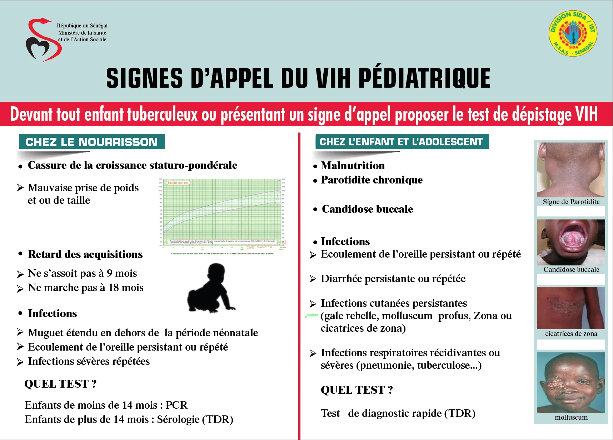

Aide à la décision clinique. Vérifiez toujours les doses.
kg
361014202530100
Tester :
Touchez pour afficher en plein écran
🔍 Plein écran

Organigramme MVA — Prise en charge du VIH chez l'enfant
MVA — Définition
Un enfant est à un stade avancé de la maladie à VIH (MVA) s’il répond à l’un des critères suivants :
Enfant de moins de 5 ansD’emblée MVA
Un enfant nouvellement dépisté est classé MVA quel que soit son stade clinique.
NB : les enfants de moins de 5 ans sous TAR depuis plus d’un an avec CV indétectable ne sont plus classés MVA.
Enfant de plus de 5 ansUn seul suffit
- Stades 3 ou 4
- Stade 1 ou 2 avec taux de CD4+ < 200 /mm³
- Retour aux soins après une interruption thérapeutique
- Échec thérapeutique
Conduite à tenir devant une MVA
Est-ce une MVA ?
< 5 ansToujours MVA (sauf TAR > 1 an + CV indétectable)
> 5 ansStade 3 ou 4 · stade 1 ou 2 avec CD4 < 200 /mm³ · retour aux soins après interruption · échec thérapeutique
NonSuivi habituel
Si oui : S · T · O · P
S
Dépister (Screen)
CD4 · tuberculose (TB-LAM urinaire, Xpert) · cryptococcose (CrAg LFA) · malnutrition
T
Traiter (Treat)
Traiter sans délai les affections opportunistes, selon le protocole national
O
Optimiser le TAR (Optimize)
Charge virale · dépister l’échec thérapeutique · renforcer l’ETP · schéma TAR optimisé
P
Prévenir (Prevent)
TPT · cotrimoxazole · vaccination adaptée
MVA et vaccination
Vaccins inactivés (hexavalent)Toujours
Indiqués même en cas de MVA.
Vaccins vivants atténués (RR)Retarder
Rougeole-Rubéole : à administrer seulement après stabilisation clinique et CV indétectable. 2 doses à 6-12 mois d’intervalle.
BCGDifférer
Jusqu’à stabilisation clinique sous TAR + CV indétectable.
Fièvre jauneSous conditions
Possible après stabilisation clinique + CV indétectable.
HPV2 doses
Deux (2) doses espacées de 6 mois chez les filles âgées de 9 à 14 ans.